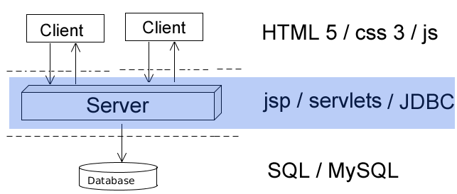
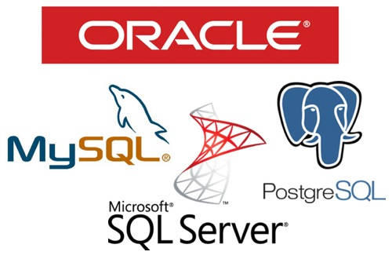
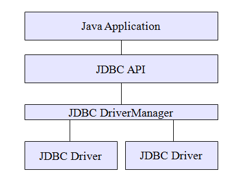
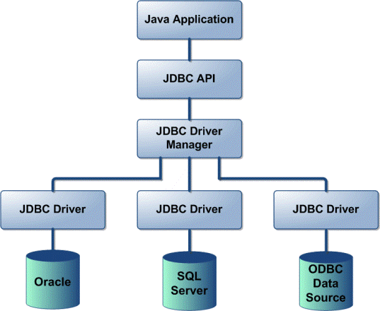
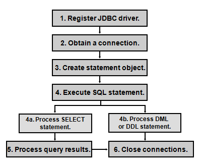

JDBC & SQL
Created by Ilya Buziuk / @ilyabuziuk
Applications architecture
Quick Overview
Database
Collection of data
DBMS
Tools for DB managment
SQL
Structured Query Language for relational DBs
Major DB vendors
Issue
Necessity of common interface for all DB
The situation in Past
-
Each db vendor provided lib for it's db
-
Lib was proprietary
-
API lib change -> code rewriting
Solution
Java Database Connectivity (JDBC)
The Gist
Avoid using any proprietary APIs
JDBC architecture
JDBC
-
Bridge between DB and Java world
-
Platform and vendor independent
-
Standard SQL statements
JDBC & JAVA
"Write once, compile once, run anywhere"
JDBC
architecture
JDBC architecture

java.sql.Driver
DB's launching point for JDBC
java.sql.DriverManager
Maintains a list of Driver implementations
java.sql.Connection
single DB connection / used for sending SQL statements
JDBC architecture
How to work with JDBC ?
-
Connect to a DB
-
Query DB
-
Display the result
How to work with JDBC ?
pom.xml
<!-- MySQL connector -->
<dependency>
<groupId>mysql</groupId>
<artifactId>mysql-connector-java</artifactId>
<version>5.1.35</version>
</dependency>
Create connection
Class.forName("com.mysql.jdbc.Driver");
connection = DriverManager.getConnection(URL, USERNAME, PASSWORD);
Execute statement
preparedStatement = connection.prepareStatement("INSERT INTO tasks (id, description, done) VALUES (?, ?, ?)");
preparedStatement.setInt(1, task.getId());
preparedStatement.setString(2, task.getDescription());
preparedStatement.setBoolean(3, task.isDone());
preparedStatement.executeUpdate();
SQL injection
attack data-driven applications, in which malicious SQL statements are inserted into an entry field for execution (e.g. to dump the database contents to the attacker). TOP website vulnerabilities
Examples
User Name:
Password:
Server Code
txtUserId = getRequestString("UserId");
txtSQL = "SELECT * FROM Users WHERE UserId = " + txtUserId;
1=1 ?
SELECT * FROM Users WHERE UserId = 105 or 1=1
Server Code
uName = getRequestString("UserName");
uPass = getRequestString("UserPass");
sql = "SELECT * FROM Users WHERE Name ='" + uName + "' AND Pass ='" + uPass + "'"
"" = "" ?
SELECT * FROM Users WHERE Name ="" or ""="" AND Pass ="" or ""=""
Batched SQL Statements
UserId = "105; DROP TABLE users"
Attack
SELECT * FROM Users WHERE UserId = 105; DROP TABLE users
Little Bobby Tables

How to avoid Attacks ?
Prepared Statement
Examples
Robert'); DROP TABLE students;
Statement stmt = conn.createStatement("INSERT INTO students VALUES('" + user + "')");
stmt.execute();
Statement stmt = conn.prepareStatement("INSERT INTO student VALUES(?)");
stmt.setString(1, user);
stmt.execute();
Close resources in finally
connection.close();
statement.close();
DAO
data access object
abstract interface to some type of database or other persistence mechanism
Entity
public class Employee {
private int id;
private String name;
.... // geters & setters
}
DAO
interface EmployeeDAO {
List<Employee> findAll();
List<Employee> findById();
List<Employee> findByName();
boolean insertEmployee(Employee employee);
boolean updateEmployee(Employee employee);
boolean deleteEmployee(Employee employee);
}
DAO Implementation
class EmployeeDAOImpl implements EmployeeDAO {
.... // Concrete implementation
}
SQL
INNER JOIN

INNER JOIN
SELECT c.CustomerName, o.OrderID, o.OrderDate
FROM Customers as c
INNER JOIN Orders as o
ON c.CustomerID = o.CustomerID
INNER JOIN = JOIN
RIGHT JOIN

LEFT JOIN

Database transaction
A series of data manipulation statements that must either fully complete or fully fail, leaving the database in a consistent state
All or Nothing
Commit & Rollback
JDBC Transactions Managment
Connections are in autocommit mode by default